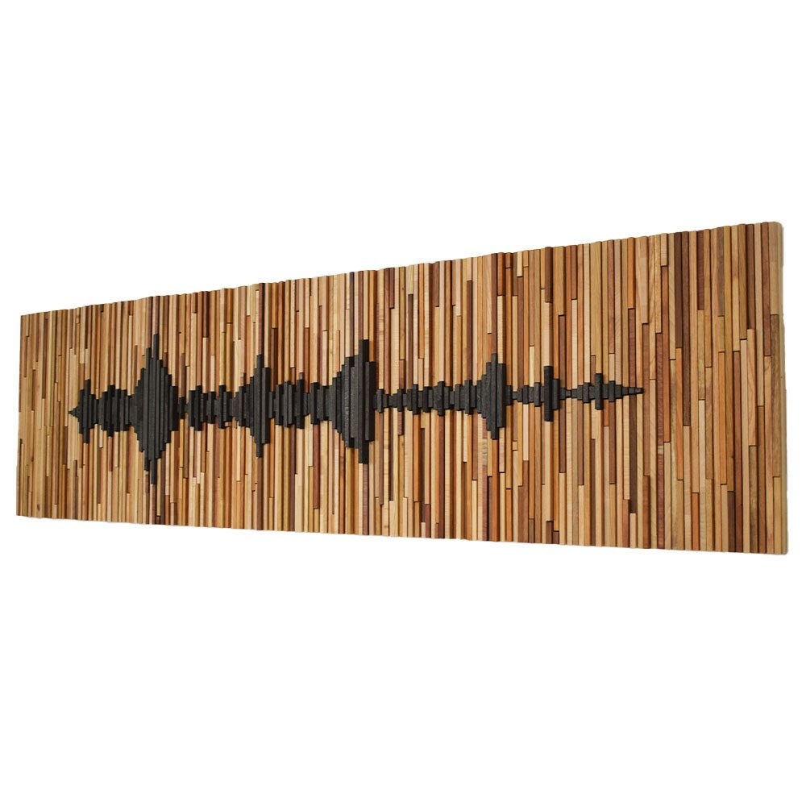
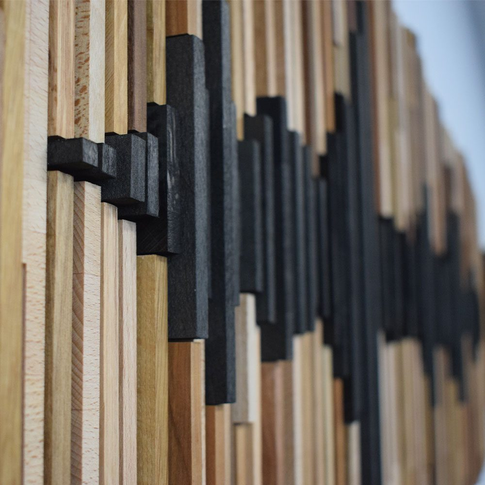
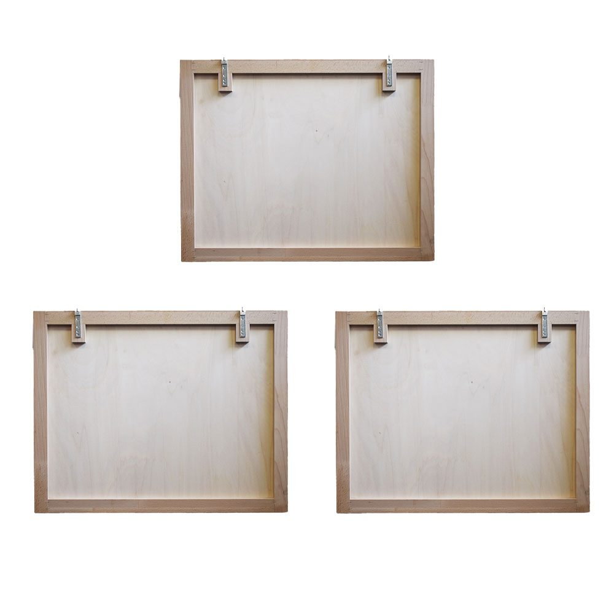

Extrasound Wave Pannello acustico in legno
Un pannello acustico in legno fatto a mano: listarelle di essenze diverse e un'onda sonora in rilievo, per la stanza dove ascolti musica.
- Tre pannelli, circa 198 cm
- Listarelle in essenze miste
- Montaggio a parete
Essenze su richiestaScopri le essenze
- Faggio
- Rovere
- Noce Canaletto
- Ciliegio
- Frassino
- Doussiè
- Wengè
900 € i tre pannelliprezzi su extrasound.it

Una superficie che rompe le riflessioni.
Le listarelle hanno lunghezze e spessori diversi: la superficie non è mai piatta. Il suono che la colpisce non rimbalza tutto nella stessa direzione, e la stanza suona meno dura.
Al centro, l'onda sonora è fatta di listarelle scure, in wengè o tinte di nero, che sporgono più delle altre. È la parte che si nota per prima, e anche quella che lavora di più.
Dove metterlo.
Il Wave lavora sulle pareti dove il suono rimbalza di più. Scegli una posizione: vedrai il suono che arriva al pannello e viene sparpagliato in tante direzioni, invece di tornare indietro tutto insieme.
Funziona anche in soggiorno e nelle sale home theater. Se non sai dove metterlo, ti aiutiamo noi con il posizionamento e l'installazione.

Tre pannelli, un'onda sola.
Il Wave è diviso in tre pannelli da 66 × 52,5 cm. Ognuno ha un telaio in legno e un fondo in multistrato, su cui le listarelle sono incollate a mano con colla vinilica.
Si appendono alla parete con staffe metalliche e, affiancati, ricompongono l'onda per tutta la lunghezza: circa 198 cm.
Fatto a mano, listarella per listarella.
Taglio le listarelle a misura e le incollo una a una sul fondo in multistrato. Per questo ogni Wave è un pezzo unico: i toni e il disegno dell'onda cambiano da un pannello all'altro.
È un modello finito: lo trovi già pronto nel nostro showroom di Cesena.
Le misure.
Ogni Wave è fatto a mano: le essenze e il disegno dell'onda cambiano leggermente da un pezzo all'altro.